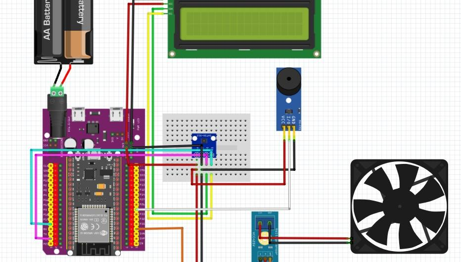
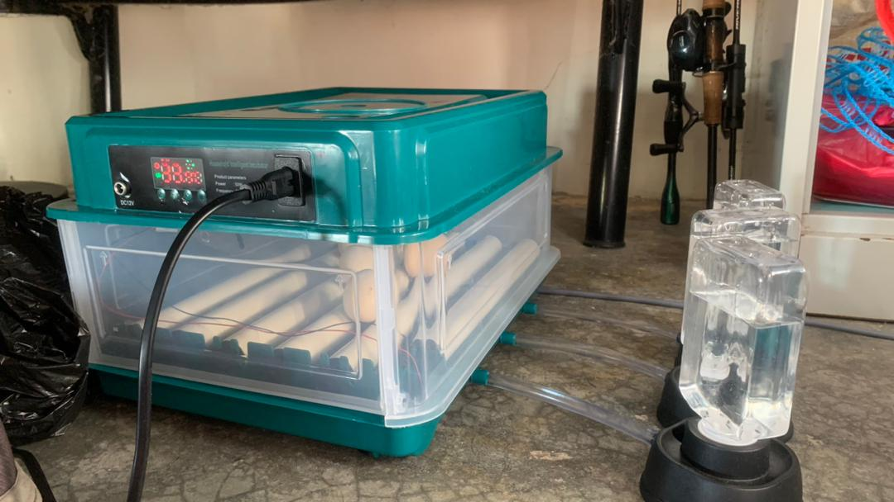
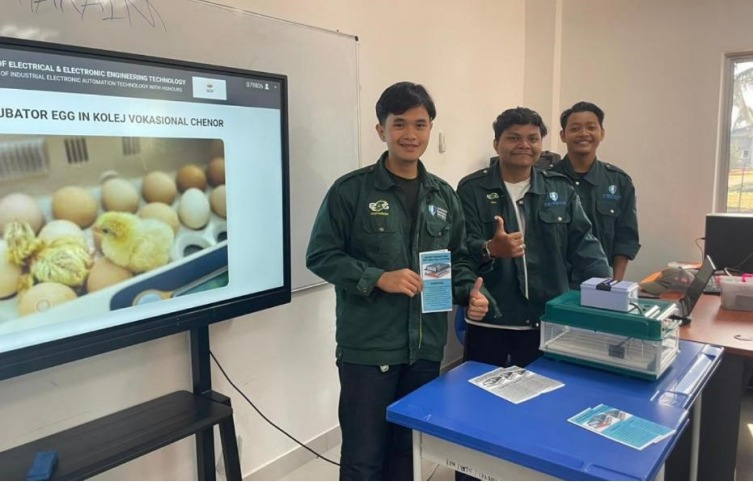
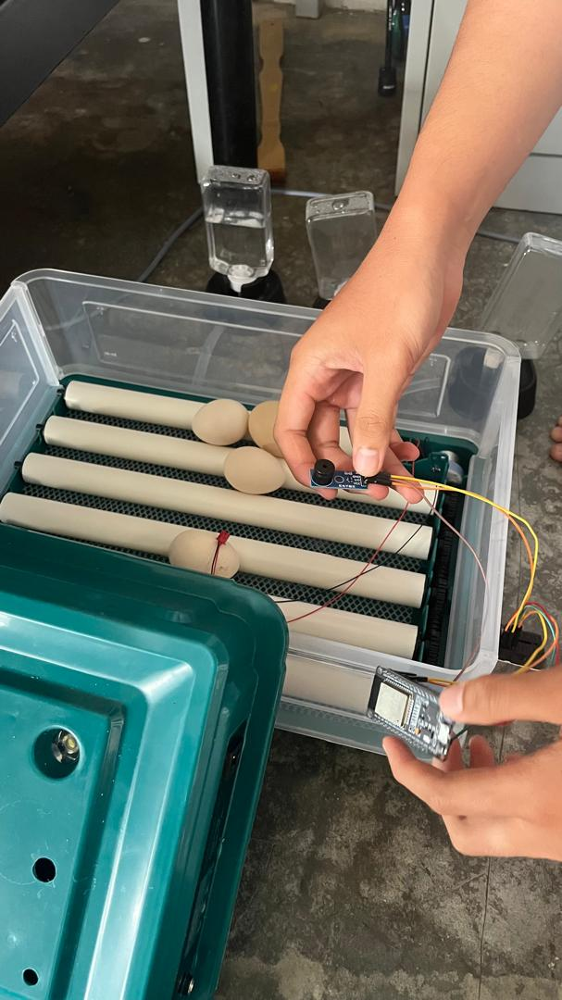
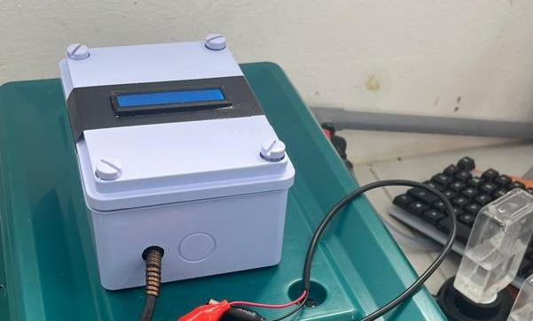

IoT Monitoring System
Egg Incubator Monitoring System for KV Pertanian Chenor, Pahang
Project Overview
An egg incubator monitoring system developed for KV Pertanian Chenor, Pahang, to monitor environmental conditions during the egg incubation process.
Project Focus
Temperature and humidity monitoring, sensor integration, data recording and notification features.
Tools and Technologies
ESP32, SHT31 Sensor, LCD Display, Arduino IDE, Google Sheets, ThingSpeak and Telegram.